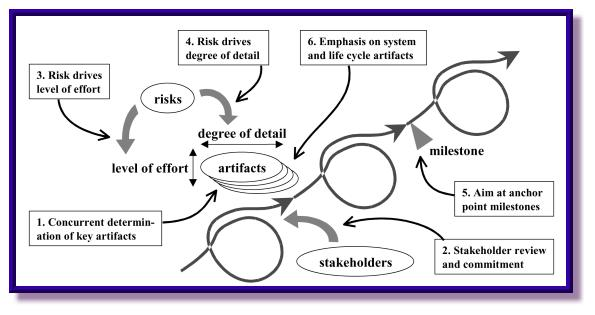
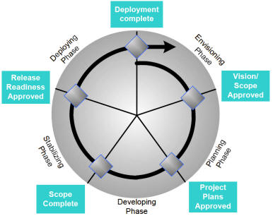
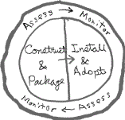

P050702
ODMA Project
ODMdev Bootspiral Scoping
version 0.12
|
|
P050702
ODMA Project |
- Latest version: The latest version of this material is available on the Internet at
<http://ODMA.info/active/ODMref10/envision/P050702b.htm>.- This version: 0.12 <http://ODMA.info/active/ODMref10/envision/P050702c.htm>. Consult that page for the latest status and for the most-recent electronic copies of the material.
To address the lifecycle within which the ODMref 1.0 implementation will occur, a "bootspiral" is carried out ahead of and sometimes along side of full-development cycles. This provides "plumbing" and a carrier for the packaging, delivery, installation, confirmation, adoption, and end-of-life of ODMref 1.0 releases and other ODMA-related components.
This attention to lifecycle beyond the immediate software-development activity is part of creating a foundation of reliability. The idea is to build to a trustworthy engagement in which delivery, maintenance, and support for ODMA components occurs. This is part of the TROSTing for ODMref 1.0.
1. Concepts
2. Context
3. Scenario
4. Artifacts
4.1 Scope Satisfaction Checklist
4.2 Approach: General Package Information and Instructions
4.3 Information and Instruction Elements
4.4 Operational-Component Package
4.5 Confirmable-Construction Package
5. Resources and References
- 1.1 ODMdev
- is the basic framework, with supporting resources, for developing, packaging, deploying and confirming new ODMA components. It serves all parts of the component lifecycle with particular attention to deliverables and how their development and operational installation are confirmed. ODMdev is a foundation for reliable delivery, availability of support resources for adopted components, and the reliable repair, upgrade, or removal of the components as circumstances change.
- 1.2 Bootspiral
- is a spiral development model (McConnell 1996, sections 7.3 & 35) that fits naturally with ideas of evolutionary development (Gilb 1988, chapter 7). Spiral development attends to lifecycle considerations and provides ways to start lean. The deliverable is enriched through a spiraling of product-development cycles.

Fig. 1 Ingredients of a Spiral Model [from (Boehm & Hansen 2001, fig.2)]
Bootstrapping of spiral development (bootspiraling) for ODMdev involves creation of end-to-end lifecycle support where there is none already. Development of the bootspiral itself may employ a variety of rudimentary improvisations until the bootspiraling completes and initial scaffolding has disappeared. Subsequent development is with the cyclic development and lifecycle process model available as if it was always present.
- 1.3 Scoping
- in this case, we mean technical (or solution) scoping as opposed to project scopings. The scopes are presented as a tabulation of the deliverables required for taking a software "component" through a complete deployment and adoption phase, starting with rudimentary elements and crude placeholders that are improved from cycle to cycle of scoping. We do not include development of the software component as a deliverable under bootspiral scopings, we take the software as an input; the delivery and support mechanism is what the bootspiral process arrives at. It is a set of rehearsals carried out so there is already a delivery practice available for improvement along with each round of deliverable-component development.
- see also:
- P050702: ODMdev Bootspiral Scoping, Motivation and Engagement
Trosting.org: About TROST
TROST i050601: Symbols of Trust2.1 Cycle of Learning and Improvement. We imagine a development process that follows the Deming-Shewhart "Plan – Do – Study – Act" cycle of learning and improvement (Latzko & Saunders 1995, p.65). For software development the cycle can be seen in the "Envisioning/Planning – Developing – Stabilizing – Deploying/Envisioning" spiraling of MSF Process Model 3.1 (Microsoft 2002, fig.8). Each cycle of the spiral leads to release of a package into the hands of others, even if only a simulated delivery as part of bootspiraling.

Fig. 2 MSF 3.1 Process Model Phases and Milestones [from (Microsoft 2002, fig.8)]The bootspiral framework applies in stabilization, deployment, and envisioning (mainly with regard to feedback, support, and envisioning a future cycle). It includes the software build process of the development phase, since builds must be repeatable and confirmable as part of stabilization as well as by external reviewers and testers.
Envisioning applies to the product and the packaging of delivery in each cycle. Stabilization can include a complete simulation and verification of the structures for community engagement in the deployment phase.
2.2 Lifecycle of Engagement. For the ODMdev Bootspiral, the lifecycle model includes engagement of external participants in confirming the construction, functionality, and stability of a release:
- Release construction is repeatable and confirmable.
- All aspects of the construction may be inspected, reconstructed, replicated, reported, and assessed.
- There's provision for review and feedback from peers, reviewers, and users into the trouble-shooting, repair/reworking, and refinement of components (either as rework or adjustment in a subsequent phase).
This extension into the adoption lifecycle of component applications can be viewed as an extension of the spiral over time until the next release-development spiral is undertaken (fig.1).
2.3 Communities of Interest. The ODMdev Bootspiral is oriented to the delivery and assessment process that, when matured, applies to engagement of
- a dispersed developer community, including open-source developers
- beta-test users, students, and writers/instructors
- independent observers, reviewers, and assessors, whether engaged privately or in a public process
- application domain end-user, system-administrator, and support personnel who encounter and engage with the lifecycle of the software component in their day-to-day application-focused activities.
2.4 Scope Exclusions.
- Because the early bootspiral does not deliver a "real" functioning component, end-user involvement is not expected, and materials suitable for end users are not provided.
- The ODMdev Bootspiral Scoping does not address the process-model adjustments that are required to deal with multiple release lifecycles. That becomes important when component lifecycles do not coincide with the lifecycle of applications systems in which the software components are introduced, requiring that components inter-work with different releases of themselves, the platforms on which they are operated, and the application software in which they are integrated.
- The prospect of retrofitting later rework to earlier releases is also excluded from this bootspiral.
Each cycle of bootspiral consists of three elements:
- 3.1 Construction and Packaging leads to a physical delivery of the component and all of the material required to employ the software and to confirm its operation and construction.
- 3.2 Installation and Adoption involves using the package and any collateral materials to install the component, confirm its operation, and perform the functions that can be exercised with it. In addition, the construction of the package can be confirmed and the available assessments reviewed before and during the integrated use of the component in an application setting.
- 3.3 Assessment and Monitoring of the component's dependable development and functioning occurs over

the lifetime of the component's use in the application setting This overlaps the other stages, especially (3.2). Those engaged in installation and review have access to assessments of others and may contribute their own. Monitoring involves learning whether there is new information such as a newly-discovered defect, disclosure of a security vulnerability, or announcement of obsolescence and the end of support. Any of these may require corrective action or response. Assessment and monitoring is carried out by users of the packaged component and by the developers and maintainers of the component.
This is a project artifact. It identifies how each scope element is defined and implemented in a given delivery. It is valuable for identifying all deviations in the current bootspiral cycle. It can also be used to account for changes and improvements over previous cycles.
It is appropriate to include a Scope Satisfaction Checklist in the delivered package.
This is material included with the software component(s) being delivered. There is everything necessary to support the component being installed and adopted in an application setting.
4.2.1 No Commitment or Installation Required for Review. It is important that general information be available for review without installing any of the package elements and without examining any of the content. The recipient is to be given a way to determine the prerequisites and any license conditions on use of the material without exposure to the package content itself and especially without committing to an installation process.
4.2.2 Distribution of the Material. Not all general information need be provided in full detail if resources can be obtained in some other way. The general information and instruction elements are provided either directly or at locations identified in the material. It is desirable to provide enough information in the package so that someone skilled in using the packages of a given sort can operate without having on-line connectivity.
4.2.3 Reliance on Supporting Resources. A number of information and instruction elements will rely on the existence of external resources for current, timely information, notification, and communication with the package supplier. The bootspiral will extend these supporting resources to some initial minimum. They will continue to expand along with growth of package deployment and audience.
4.2.4 Layered, Progressive Development. The organization into individual artifacts and in-package and/or externally-available location of the material is to be resolved on a case-by-case basis. The level of effort and degree of detail will be resolved as each bootspiral round is initiated (fig. 1). The Scope Satisfaction Checklist will identify the specific approach (section 4.1, above) for each distributed package.
These are generic element descriptions. For a given implementation of a bootspiral cycle, any element may be very limited if provided at all (although the omission will be explicit), as specified in the scope statement and checklist for the deliverable. For ODMref 1.0 as a reference implementation, some elements may never be developed very far. It is important to account for that and also develop the practice, nevertheless.
4.3.1 Package Identification. There is unambiguous identification of the package, its version and release date and a way to determine whether this a more-recent version that may be preferable to use. Similarly, all elements in the package are identified in some unambiguous scheme that allows for auditing and tracing of elements back to their originations. This may be carried at the beginning of the manifest.
4.3.2 Manifest. The manifest describes the package content, identifies the individually-usable elements and the pre-requisites for the use of the material. The manifest can also provide additional information or summaries that link to where additional detailed information may be found.
4.3.3 Authentication Information. There is information on confirming the authenticity of the package and its content. Some of this may be incorporated in the manifest. Because the package might be counterfeit, there must be an independently-reliable, external means for determining that the package is authentic without first trusting information conveyed in the package.
4.3.4 Status Information. There is information for determining the current support status of the package, learning the ongoing status as it may have changed over time, and periodically locating other information that may be important in installation and adoption. Any ways to submit such information is provided as part of support information (4.3.18).
4.3.5 Notices. Copyright notices and other intellectual-property notices that might be required, such as applicability of any royalty-free licenses and similar conditions that may impact the transferability and application of the component.
4.3.6 License and Terms of Use. This provides at least summary notice of license(s) and terms of use, with identification of where complete statements and related information is to be found. These are for the original work and may also emphasize the applicability of other licenses.
4.3.7 Attributions and Dependencies. Acknowledgment of sources that are relied upon in the component and that have derivative works in the component is provided. The original source codes and other dependencies need to be identified and locatable. This is not merely for compliance with conditions of open-source licenses of constituent elements integrated in the package. It is important to know what other specific components are relied upon for the packaged components in case there is some question about their reliability and any defects and vulnerabilities that have been disclosed since the current package was distributed. This internal dependency on the trustworthiness of other sources (termed a trust point) is made explicit. In some cases the details are technical and elaborate, so they are called out separately. The attributions then provide usable citation and location of further details for anyone with concern in the matter.
4.3.8 Attestations and Certifications. Attestations and certifications about the package, as originally constructed, are provided for inspection and review as part of the preparation to install the packaged components and other materials. If a threat-model exists for the component, here or the next section is a good place to make that known. Encourage checking for recent status, especially to see whether any certifications and attestations have been challenged or revoked (cf. 4.3.4).
4.3.9 Assurances, Caveats, Workarounds, and Disclaimers. There may be additional warnings and conditions on use of the current package that a potential adopter is encourage to take into account (e.g., if the components are in "beta" or there are known deficiencies or limitations that must be allowed for). If there is no way to fall back to a previous version or other irreversible condition, that must be made very clear. In some cases, explicit assurances are made rather than leave some case unstated and left to question. Assurance that the installation procedures are fully reversible, for example, is important, as well as description of how existing data may need to be backed-up and preserved for restoration. Any cautionary observations about failure modes of the components are raised here, with further detailing in the information on troubleshooting and incident recovery (sections 4.3.13-4.3.17).
4.3.10 Skill Prerequisites. There may be special skill requirements to make use of the package: to install it properly, to adopt it, and to integrate its usage in an application system and setting. These are made known. It may be important to identify different classes of users (e.g., system administrator, instructor, support tech., end-users, and others as applicable) and the prerequisites that apply.
4.3.11 Platform Prerequisites. Any prerequisites for installation and operation on a supported platform are identified. This may include supporting software (e.g., having the ODMA Connection Manager already installed), and so on. Any software that is required to use or operate with any of the materials and components is identified. Facility with such platform tools and services may be reflected in the skill prerequisites (4.3.8). Although it is not anticipated for ODMref 1.0 and similar components, integration with system-management facilities may also be a factor. There may need to be a way to control such integration, especially while the component is under test and trial operation (cf. 4.3.14).
4.3.12 Resource and Capacity Requirements. This information allows the adopter to determine whether the required resources are available and affordable for provision to the packaged components in the intended setting.
4.3.13 Installation Instructions. Instructions cover pre-installation conditions (e.g., how and where to place the package, the account to operate in, disposition of any previous installation, and privileges required), unpacking material, and initiating any special installation setup processes or scripts. The normal progression through installation is described, along with response to potential exceptions. It should be clear what will be installed where, and under what conditions. It must be possible to review that without actually performing the installation. If installation relies on automated procedures, there must be information for determining how to restore the configuration in the event that the installation process itself were to fail to complete or back out correctly.
4.3.14 Confirmation Instructions. Confirmation of the installation and proper operation is described. This may involve additional components in the package or simple tests that can be carried out. During the bootspiral development, this may be all there is to do. In the event that confirmation fails, there need to be procedures for backing out the installation, similar to installation failure recovery (4.3.13) or in-use trouble-shooting (4.3.15). If there are confidence tests and backup procedures, there should be ways to demonstrate and exercise these, including any provision of live-fire (injected-failure) drills. Special test, trial, and practice modes where production data sets are not altered and production transactions do not arise may also be available. Wherever possible, confirmation procedures are accompanied by result sets that they are expected to be reproducible, with automatic checking for agreement.
4.3.15 Trouble-Shooting Instructions. There may be specific guidance on troubleshooting during installation and confirmation as well as during operational use. Part of the guidance may involve checking for known defects that may have been encountered (4.3.4, above) as well as how to submit an incident report against the component. If there are confidence tests and repair-backup-recovery procedures, these are identified and sources of their instructions and usage examples provided. Anything that makes it effortless for an user to report a problem is valuable.
4.3.16 Data Backup, Preservation, Recovery, and Upgrade/Downgrade. The protection and preservation of data-set integrity may have special provisions, especially with document-management-system components. Beside routine back and recovery and repair procedures for data sets and their elements, a package installation may involve upgrade of data set structure and metadata support. The behavior of down-level versions with upgraded data may need to be accounted for (possibly after a package is supplanted but still supported).
4.3.17 Removal and Roll-Back Instructions. Provisions for removal of an installed and adopted package are described. This includes reversion to an earlier package, however that can be accomplished. In case automatic removal or roll-back fails, guidance for manual repair is also available.
4.3.18 Support, Feedback, and Assessment Reporting Instructions. The availability of support, peer-discussion groups, mailing lists, subscriptions to alerts and other ways to ask questions, request support, report problems, and introduce evaluations and assessments is described. This is closing the loop on status information (4.3.4).
4.3.19 Configuration Management. Although the component may have built-in configuration management functions and options, there may be need to document some of that and any manual aspects that require attention as part of installation and adoption.
4.3.20 Release Notes. There is always the prospect of some other release notes to accompany a package, especially with regard to bugs fixed, etc.
The operational package contains everything needed to place the delivered software component into operational use, from installation to adoption to ultimate removal and replacement:
4.4.1 Scope Satisfaction Checklist. This may be included or referenced (4.1).
4.4.2 General Information and Instructions. The elements applicable to the operational components and their installation are covered (4.2).
4.4.3 Installation Tools and Scripts. Any automatic aids for the installation of the components, adjustment of registries and configuration files, and also confirmation processes are provided. Tools and scripts for removal are included.
4.4.4 Components. The installable components are part of the package, possibly embedded in an installer. On installation, these become operational and available for adoption in application settings. The components may incorporate a variety of information and instruction elements that are available as part of their operation. This includes "About ..." identifications, splash notifications, and Help-dialog content as well as more active-support (e.g., checking for announcements and updates).
4.4.5 Confirmation and Trouble-Shooting Tools. There may be companion materials to support confirmation of authenticity, performing verification tests, and also trouble-shooting the operational software. Some of this support, including configuration-management functions, may be embedded in the operational components.
4.4.6 Familiarization and Training Support. Any computer-based support tied directly to the components, including ones that allow simulated or trial use, may be package with the components.
The confirmable-construction package corresponds to the open-source provision of source code and construction projects for building the components and the operational-component package. The model applies regardless of the conditions under which source-code is made available:
- It is a basis for archiving of the artifacts that are required for reproduction of the construction, if it is ever needed.
- It is a basis for internal turnovers to ensure that the construction is repeatable and confirmable, e.g., between a development team and a system-test and deployment operation (fig. 2).
- It may be the form delivered to external auditors for confirmation, review, assessment, and certification/attestation of qualities of the package.
4.5.1 Scope Satisfaction Checklist. This may be included or referenced (4.1). This is of a rather different nature, since it applies to the repeatability of the construction and the verification of the software.
4.5.2 General Information and Instructions. These cover the source code and construction elements, not the operational-component package.
4.5.3 The Operational-Component Package. This is the package whose construction is to be repeatable and verifiable. It may be included or located. If the package is separate, there are provisions for ensuring that the package corresponds to the build that is being confirmed.
4.5.4 Source Code Tree. The source-code, libraries, and other material, are organized in the fashion presumed by the build tools and scripts. This is normally installed for use by a simple extraction from the package (e.g., Zip file with a sub-directory structure).
4.5.5 Build Tools and Scripts. Any automatic aids for the construction of the operational components from the source code. There is a tool and/or script for confirming that a replicated build has successfully duplicated the software of the operational-component package.
4.5.6 Test Cases, Code, Tools and Data. There may be companion materials to support confirmation and testing of the source-code units that make up the operational components. Also, the operational-component confirmation and troubleshooting tools may be part of the construction materials. These materials are valuable if the source code tree is being maintained or modified to make a derivative work.
4.5.7 Technical Information and Documentation. Additional documents that support the understanding and use of the source code and the build process.

|
You are
navigating the ODMA Interoperability Exchange. |
created 2005-07-05-18:21 -0700 (pdt) by
orcmid |